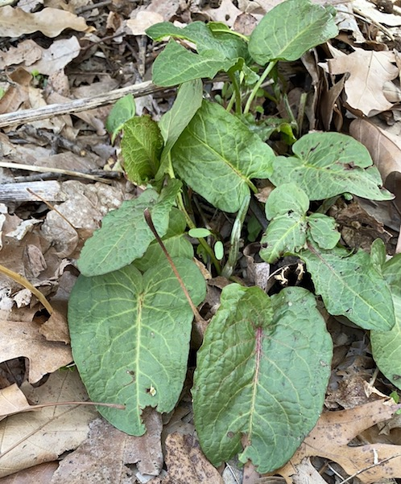
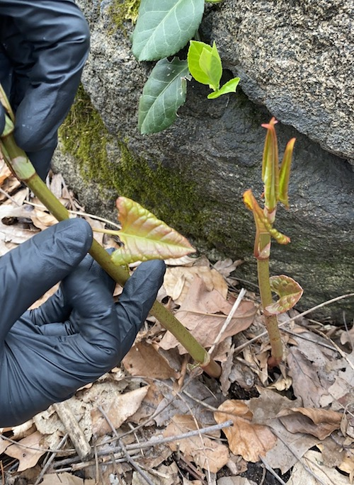
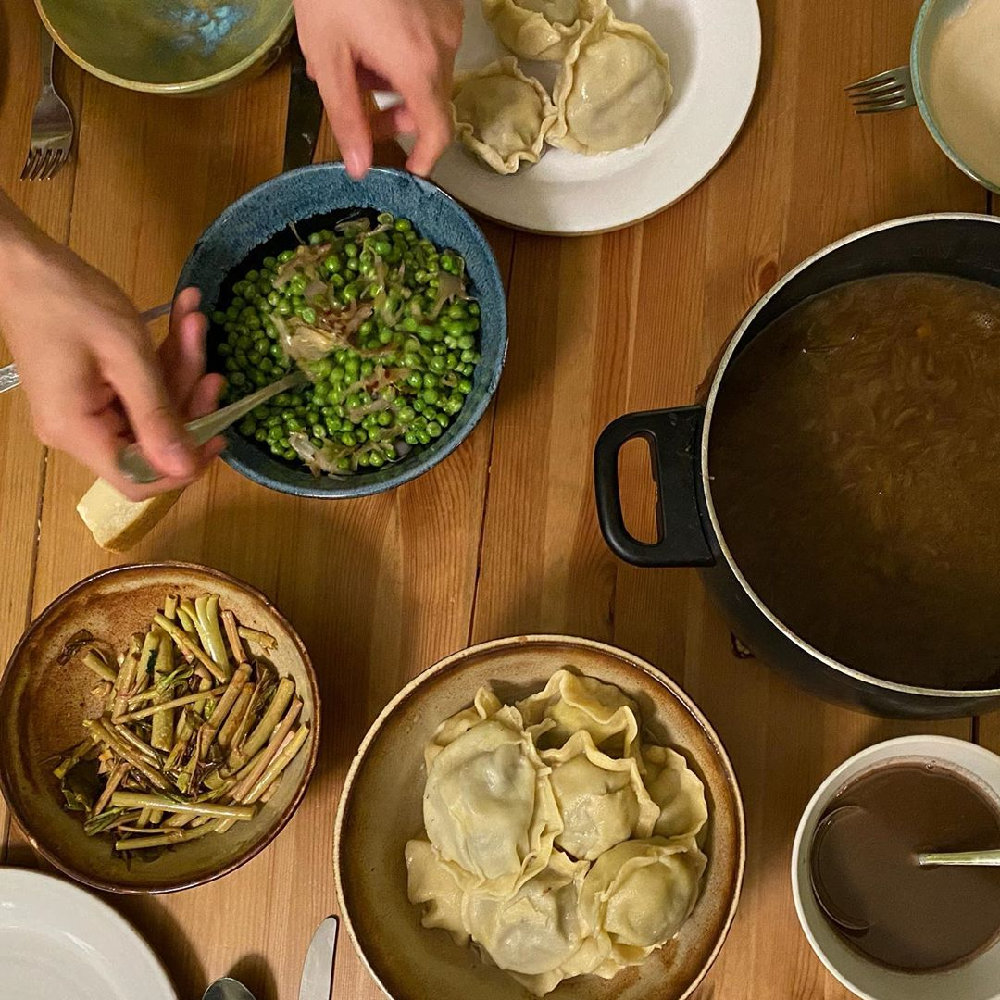
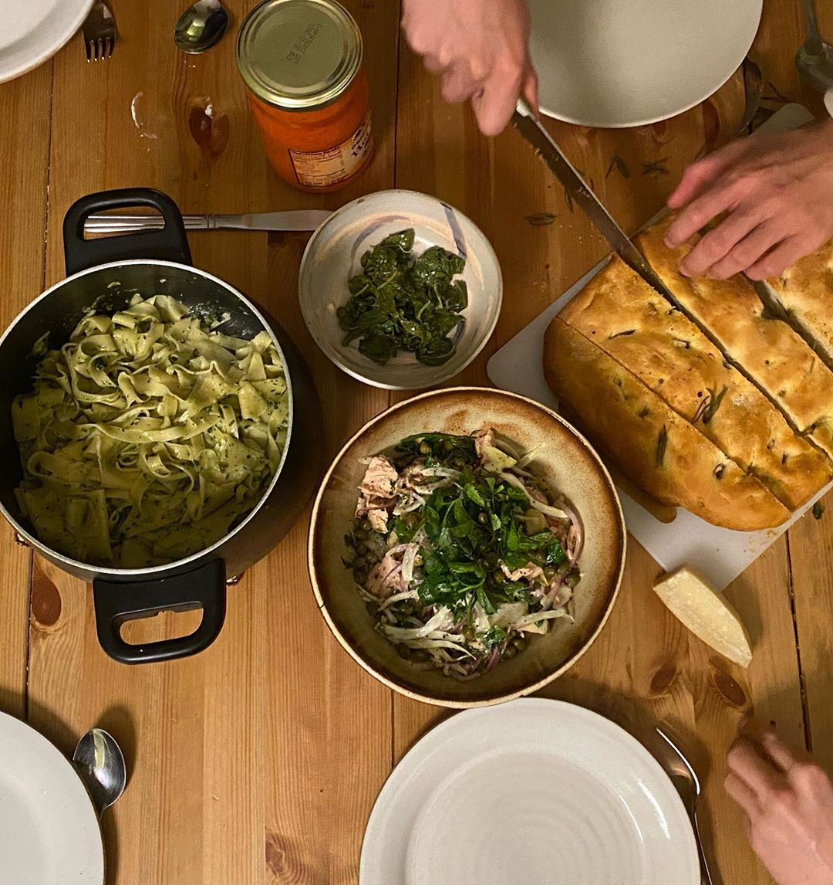

04.05.2020
backseat foraging
We've been in proper lockdown mode now for almost 2 weeks, which we've been counting since the last time we went to the supermarket (we're trying to go max once a fortnight). We've got plenty of food, but a few days ago we realised we were getting very low on green vegetables.
April 1 is also gary's birthday, so we decided to celebrate by going to the park, and foraging some wild greens. As ever with these trips, you never know what you'll find. Having set out imagining bundles of dock and dandelion, we actually got small amounts of dock, and no dandelion at all (we found some, but it was right next to an nyc parks truck, we thought we might get told off). We did however (thanks to dan's foraging app) find large amounts of ground elder and japanese knotweed shoots, both of which are edible when young and fresh.

We were a bit apprehensive (after all,
eattheweeds.com might have a bit of an agenda in promoting these things as 'delicious' rather than merely 'not deadly'), but figured we should probably try it out.

That evening, Gary made oxtail ravioli (extravagent), and we sauteed the chopped knotweed on the side. As promised online, it had a distinctly rhubarb-y flavour, though more savory. It was nice (and very fresh) sauteed, but the flavour could maybe be best used in a sweeter dish... anyway, super interesting, well worth an experiment!

We cooked dinner with the dock and the elder shoots the following day. Following direction from eattheweeds.com I blanched the dock leaves first to get rid of the bitter taste, rinsed, then fried in butter. They were not very many, but tasty! Toby used the elder shoots in a tuna salad with fennel, dill, lemon, capers and red onions, which was really delicious. They've got a peppery, celery-adjacent taste that's a nice compliment to the fennel. We ate with foccacia, and pasta offcuts from the day before with the pesto cubes we froze 2 weeks ago.

I just used the last of the elder shoots chopped through a
fellahi salad today: the slight pepperiness was a nice accompaniment to the mint and parsley. Eat the weeds!